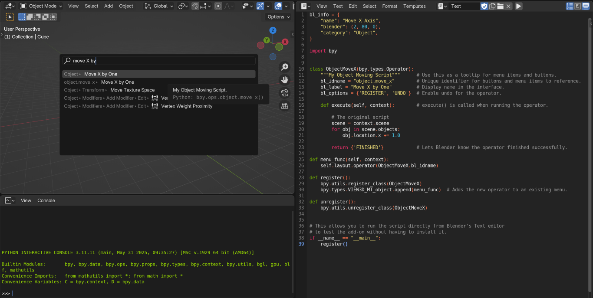
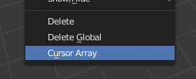
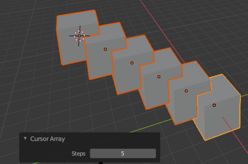

Hướng dẫn Add-on¶
Đối tượng độc giả¶
Hướng dẫn này được thiết kế để giúp các technical artist hoặc developer học cách mở rộng Blender. Người đọc làm theo hướng dẫn này cần hiểu những kiến thức cơ bản về Python.
Kiến thức cần có trước¶
Trước khi đọc hướng dẫn này, bạn nên...
Quen thuộc với những kiến thức cơ bản khi làm việc trong Blender.
Biết cách chạy script trong Text editor của Blender.
Hiểu về các kiểu dữ liệu cơ bản của Python (integer, Boolean, string, list, tuple, dictionary và set).
Quen thuộc với khái niệm module của Python.
Có hiểu biết cơ bản về class (lập trình hướng đối tượng) trong Python.
Tài liệu nên đọc trước khi bắt đầu hướng dẫn này.
Các chương (1, 2, 3, 4 và 7) của Dive Into Python.
Blender API Quickstart giúp làm quen với các kiến thức cơ bản về Blender/Python.
Để xử lý tốt nhất các thông báo lỗi mà Python in ra khi viết script, hãy chạy Blender từ terminal. Xem Use The Terminal.
Mẹo
Bạn có thể bật Developer Extras trong preferences để kích hoạt các tính năng giúp việc phát triển add-on dễ dàng hơn.
Liên kết Tài liệu¶
Trong khi đọc hướng dẫn, bạn có thể muốn tham khảo tài liệu tham khảo của chúng tôi.
Blender API Overview: Tài liệu này khá chi tiết nhưng hữu ích nếu bạn muốn tìm hiểu sâu hơn về một chủ đề.
Tài liệu tham khảo API
blender_api:bpy.context-- Hữu ích để có danh sách các item khả dụng mà script của bạn có thể thao tác.blender_api:bpy.types.Operator-- Các add-on dưới đây định nghĩa operator; tài liệu này cung cấp chi tiết và thêm ví dụ về operator.
Add-on là gì?¶
Một add-on đơn giản chỉ là một module Python với một vài yêu cầu bổ sung để Blender có thể hiển thị nó trong một danh sách kèm thông tin hữu ích.
Để lấy ví dụ, đây là add-on đơn giản nhất có thể:
bl_info = {
"name": "My Test Add-on",
"blender": (2, 80, 0),
"category": "Object",
}
def register():
print("Hello World")
def unregister():
print("Goodbye World")
bl_infolà một dictionary chứa metadata của add-on như tiêu đề, phiên bản và tác giả, để hiển thị trong danh sách add-on của Preferences. Nó cũng chỉ định phiên bản Blender tối thiểu cần có để chạy script; các phiên bản cũ hơn sẽ không hiển thị add-on trong danh sách.
registerlà một hàm chỉ chạy khi bật add-on; điều này có nghĩa là module có thể được tải mà không cần kích hoạt add-on.
unregisterlà một hàm dùng để dỡ bỏ mọi thứ mà
registerđã thiết lập; hàm này được gọi khi add-on bị tắt.
Lưu ý rằng add-on này không làm bất cứ điều gì liên quan đến Blender (ví dụ: module blender_api:bpy không được import).
Đây là một ví dụ add-on mang tính minh họa nhằm cho thấy các yêu cầu cơ bản của một add-on rất đơn giản.
Một add-on điển hình sẽ đăng ký các operator, panel, mục menu, v.v., nhưng đáng chú ý là bất kỳ script nào cũng có thể làm điều đó khi được chạy từ Text editor hoặc thậm chí từ interactive console -- không có gì khác biệt vốn có ở add-on khiến nó có thể tích hợp với Blender; chức năng như vậy đơn giản được cung cấp bởi module blender_api:bpy cho bất kỳ script nào truy cập.
Vì vậy, add-on chỉ là một cách đóng gói module Python để người dùng có thể dễ dàng sử dụng.
Ghi chú
Chạy script này trong Text editor sẽ không in ra gì cả; để thấy kết quả, nó phải được cài đặt qua Preferences. Các thông báo sẽ được in ra khi bật và tắt add-on.
Add-on Đầu tiên của Bạn¶
Add-on đơn giản nhất ở trên chỉ hữu ích như một ví dụ chứ không hơn. Add-on tiếp theo vẫn đơn giản nhưng cho thấy cách tích hợp một script vào Blender bằng một Operator -- cách điển hình để định nghĩa một công cụ được truy cập từ menu, nút bấm và phím tắt.
Ở ví dụ đầu tiên, chúng ta sẽ tạo một script đơn giản là di chuyển tất cả object trong một scene.
Viết Script¶
Thêm script sau vào Text editor trong Blender:
import bpy
scene = bpy.context.scene
for obj in scene.objects:
obj.location.x += 1.0
Nhấp vào nút Run Script, tất cả object trong scene đang hoạt động sẽ được di chuyển 1.0 đơn vị.
Viết Add-on (Đơn giản)¶
Add-on này lấy phần thân của script ở trên và thêm vào hàm execute() của một operator.
bl_info = {
"name": "Move X Axis",
"blender": (2, 80, 0),
"category": "Object",
}
import bpy
class ObjectMoveX(bpy.types.Operator):
"""My Object Moving Script""" # Use this as a tooltip for menu items and buttons.
bl_idname = "object.move_x" # Unique identifier for buttons and menu items to reference.
bl_label = "Move X by One" # Display name in the interface.
bl_options = {'REGISTER', 'UNDO'} # Enable undo for the operator.
def execute(self, context): # execute() is called when running the operator.
# The original script
scene = context.scene
for obj in scene.objects:
obj.location.x += 1.0
return {'FINISHED'} # Lets Blender know the operator finished successfully.
def menu_func(self, context):
self.layout.operator(ObjectMoveX.bl_idname)
def register():
bpy.utils.register_class(ObjectMoveX)
bpy.types.VIEW3D_MT_object.append(menu_func) # Adds the new operator to an existing menu.
def unregister():
bpy.utils.unregister_class(ObjectMoveX)
# This allows you to run the script directly from Blender's Text editor
# to test the add-on without having to install it.
if __name__ == "__main__":
register()
Ghi chú
bl_info được tách thành nhiều dòng, đây chỉ là quy ước phong cách dùng để dễ dàng thêm các mục hơn.
Ghi chú
Thay vì dùng bpy.context.scene, chúng ta dùng tham số context.scene được truyền vào execute(). Trong hầu hết trường hợp, hai cách này giống nhau. Tuy nhiên trong một số trường hợp, operator sẽ được truyền một context tùy chỉnh, do đó các tác giả script nên ưu tiên tham số context được truyền cho operator.
Để kiểm tra script, bạn có thể sao chép và dán nó vào Text editor của Blender rồi chạy. Cách này sẽ thực thi script trực tiếp và gọi register ngay lập tức.
Tuy nhiên, chạy script sẽ không di chuyển object nào. Để làm điều đó, bạn cần thực thi operator mới được đăng ký.

Menu Operator Search.¶
Mở menu Operator Search và gõ "Move X by One" (chính là bl_label), sau đó nhấn Return.
Các object sẽ di chuyển như trước.
Giữ add-on này mở trong Blender cho bước tiếp theo - Cài đặt.
Cài đặt Add-on¶
Khi đã có add-on trong Text editor của Blender, bạn sẽ muốn cài đặt nó để có thể bật trong Preferences và tự tải khi khởi động.
Dù add-on ở trên chỉ để thử nghiệm, chúng ta vẫn sẽ đi qua các bước để bạn biết cách làm cho lần sau.
Để cài đặt đoạn văn bản trong Blender như một add-on, trước tiên bạn phải lưu nó lên ổ đĩa. Chú ý tuân thủ các quy tắc đặt tên áp dụng cho module Python và kết thúc bằng phần mở rộng .py.
Khi file đã nằm trên ổ đĩa, bạn có thể cài đặt nó giống như với một add-on tải xuống từ internet.
Mở và chọn file.
Giờ add-on sẽ xuất hiện trong danh sách và bạn có thể bật nó bằng cách nhấp vào checkbox; nếu muốn nó được bật khi khởi động lại, hãy nhấn Save as Default. Operator có thể được chạy theo cách giống như đã mô tả ở phần trước.
Khi add-on được bật, Blender thực thi mã và chạy hàm register(). Khi add-on bị tắt, Blender chạy hàm unregister().
Ghi chú
Vị trí lưu add-on phụ thuộc vào cấu hình Blender của bạn. Khi cài đặt một add-on, đường dẫn nguồn và đích sẽ được in ra console. Bạn cũng có thể tìm vị trí thư mục add-on bằng cách chạy đoạn sau trong Python Console:
import addon_utils
print(addon_utils.paths())
Bạn có thể đọc thêm về chủ đề này tại: Directory Layout.
Add-on Thứ hai của Bạn¶
Với add-on thứ hai, chúng ta sẽ tập trung vào object instancing -- cụ thể là tạo các bản sao liên kết (linked copy) của một object theo cách tương tự như những gì bạn có thể đã thấy với modifier Array.
Viết Script¶
Như trước, trước tiên chúng ta sẽ bắt đầu với một script, phát triển nó, rồi chuyển thành add-on.
import bpy
from bpy import context
# Get the current scene
scene = context.scene
# Get the 3D cursor location
cursor = scene.cursor.location
# Get the active object (assume we have one)
obj = context.active_object
# Now make a copy of the object
obj_new = obj.copy()
# The new object has to be added to a collection in the scene
scene.collection.objects.link(obj_new)
# Now we can place the object
obj_new.location = cursor
Giờ hãy thử sao chép script này vào Blender và chạy nó với Cube mặc định. Hãy chắc chắn rằng bạn đã nhấp để di chuyển 3D cursor trước khi chạy, vì bản sao sẽ xuất hiện tại vị trí của con trỏ.
Sau khi chạy, hãy để ý rằng khi bạn vào Edit Mode để thay đổi Cube -- tất cả các bản sao đều thay đổi theo. Trong Blender, điều này được gọi là Linked Duplicates.
Tiếp theo, chúng ta sẽ thực hiện việc này trong một vòng lặp, để tạo một dãy object nằm giữa object đang hoạt động và con trỏ.
import bpy
from bpy import context
scene = context.scene
cursor = scene.cursor.location
obj = context.active_object
# Use a fixed value for now, eventually make this user adjustable
total = 10
# Add 'total' objects into the scene
for i in range(total):
obj_new = obj.copy()
scene.collection.objects.link(obj_new)
# Now place the object in between the cursor
# and the active object based on 'i'
factor = i / total
obj_new.location = (obj.location * factor) + (cursor * (1.0 - factor))
Hãy thử chạy script này với object đang hoạt động và con trỏ đặt cách xa nhau để xem kết quả.
Với script này, bạn sẽ thấy chúng ta thực hiện một số phép tính với vị trí object và con trỏ; điều này khả thi vì cả hai đều là các instance 3D của blender_api:mathutils.Vector -- một class tiện dụng do module blender_api:mathutils cung cấp, cho phép vector nhân với số và ma trận.
Nếu bạn quan tâm đến lĩnh vực này, hãy đọc thêm về blender_api:mathutils.Vector -- có nhiều hàm tiện dụng như lấy góc giữa hai vector, tích có hướng (cross product), tích vô hướng (dot product), cũng như các hàm nâng cao hơn trong blender_api:mathutils.geometry như nội suy spline Bézier và phép giao tia-tam giác.
Hiện tại chúng ta sẽ tập trung chuyển script này thành add-on, nhưng thật tốt khi biết rằng module toán 3D này luôn sẵn có và có thể giúp bạn với các chức năng nâng cao hơn về sau.
Viết Add-on¶
Bước đầu tiên là chuyển nguyên vẹn script thành một add-on:
bl_info = {
"name": "Cursor Array",
"blender": (2, 80, 0),
"category": "Object",
}
import bpy
class ObjectCursorArray(bpy.types.Operator):
"""Object Cursor Array"""
bl_idname = "object.cursor_array"
bl_label = "Cursor Array"
bl_options = {'REGISTER', 'UNDO'}
def execute(self, context):
scene = context.scene
cursor = scene.cursor.location
obj = context.active_object
total = 10
for i in range(total):
obj_new = obj.copy()
scene.collection.objects.link(obj_new)
factor = i / total
obj_new.location = (obj.location * factor) + (cursor * (1.0 - factor))
return {'FINISHED'}
def register():
bpy.utils.register_class(ObjectCursorArray)
def unregister():
bpy.utils.unregister_class(ObjectCursorArray)
if __name__ == "__main__":
register()
Mọi thứ ở đây đều đã được đề cập trong các bước trước; bạn vẫn có thể thử chạy add-on và suy nghĩ xem có thể làm gì để nó hữu ích hơn.
Hai điểm thiếu sót rõ rệt nhất là -- tổng số bị cố định ở 10, và việc phải truy cập operator bằng Operator Search thì không tiện lắm.
Cả hai bổ sung này sẽ được giải thích ngay sau đây, kèm script hoàn chỉnh ở phía sau.
Thuộc tính Operator¶
Có nhiều loại thuộc tính được dùng cho cài đặt công cụ; các loại phổ biến bao gồm: int, float, vector, color, Boolean và string.
Các thuộc tính này được xử lý khác với thuộc tính class Python thông thường, vì Blender cần hiển thị chúng trong giao diện, lưu cài đặt của chúng trong keymap và giữ lại cài đặt để tái sử dụng.
Dù việc này được xử lý theo cách khá Pythonic, hãy lưu ý rằng bạn thực sự đang định nghĩa các cài đặt công cụ được tải vào Blender và được truy cập bởi các phần khác của Blender, nằm ngoài Python.
Để loại bỏ con số 10 cố định cho total, chúng ta sẽ dùng một thuộc tính operator. Thuộc tính operator được định nghĩa qua module bpy.props, được thêm vào thân class:
# moved assignment from execute() to the body of the class...
total: bpy.props.IntProperty(name="Steps", default=2, min=1, max=100)
# and this is accessed on the class
# instance within the execute() function as...
self.total
Các thuộc tính từ blender_api:bpy.props này được Blender xử lý đặc biệt khi class được đăng ký, để chúng hiển thị dưới dạng các nút bấm trong giao diện người dùng. Có nhiều tham số bạn có thể truyền cho thuộc tính để đặt giới hạn, thay đổi giá trị mặc định và hiển thị tooltip.
Xem thêm
blender_api:bpy.props.IntProperty()
Tài liệu này không đi vào chi tiết về cách dùng các loại thuộc tính khác. Tuy nhiên, liên kết ở trên có các ví dụ về cách dùng thuộc tính nâng cao hơn.
Keymap¶
Trong Blender, add-on có keymap riêng để không can thiệp vào các keymap có sẵn của Blender.
Trong ví dụ dưới đây, một blender_api:bpy.types.KeyMap mới cho object mode được thêm vào, sau đó một blender_api:bpy.types.KeyMapItem được thêm vào keymap đó để tham chiếu tới operator mới thêm của chúng ta, dùng Shift-Ctrl-T làm phím tắt để kích hoạt.
# store keymaps here to access after registration
addon_keymaps = []
def register():
# handle the keymap
wm = bpy.context.window_manager
km = wm.keyconfigs.addon.keymaps.new(name='Object Mode', space_type='EMPTY')
kmi = km.keymap_items.new(ObjectCursorArray.bl_idname, 'T', 'PRESS', ctrl=True, shift=True)
kmi.properties.total = 4
addon_keymaps.append((km, kmi))
def unregister():
# handle the keymap
for km, kmi in addon_keymaps:
km.keymap_items.remove(kmi)
addon_keymaps.clear()
Hãy để ý rằng mục keymap có thể có cài đặt total khác với giá trị mặc định do operator đặt; điều này cho phép bạn dùng nhiều phím truy cập cùng một operator với các cài đặt khác nhau.
Ghi chú
Mặc dù Shift-Ctrl-T không phải phím tắt mặc định của Blender, rất khó đảm bảo các add-on sẽ không ghi đè keymap của nhau. Vì vậy, ít nhất hãy cẩn thận khi gán phím để chúng không xung đột với chức năng quan trọng của Blender (xem thêm add-on is key free).
Để xem tài liệu API về các hàm được liệt kê ở trên, xem:
blender_api:bpy.types.KeyMaps.new()blender_api:bpy.types.KeyMapblender_api:bpy.types.KeyMapItems.new()blender_api:bpy.types.KeyMapItem
Ghép Tất cả Lại¶
bl_info = {
"name": "Cursor Array",
"blender": (2, 80, 0),
"category": "Object",
}
import bpy
class ObjectCursorArray(bpy.types.Operator):
"""Object Cursor Array"""
bl_idname = "object.cursor_array"
bl_label = "Cursor Array"
bl_options = {'REGISTER', 'UNDO'}
total: bpy.props.IntProperty(name="Steps", default=2, min=1, max=100)
def execute(self, context):
scene = context.scene
cursor = scene.cursor.location
obj = context.active_object
for i in range(self.total):
obj_new = obj.copy()
scene.collection.objects.link(obj_new)
factor = i / self.total
obj_new.location = (obj.location * factor) + (cursor * (1.0 - factor))
return {'FINISHED'}
def menu_func(self, context):
self.layout.operator(ObjectCursorArray.bl_idname)
# store keymaps here to access after registration
addon_keymaps = []
def register():
bpy.utils.register_class(ObjectCursorArray)
bpy.types.VIEW3D_MT_object.append(menu_func)
# handle the keymap
wm = bpy.context.window_manager
# Note that in background mode (no GUI available), keyconfigs are not available either,
# so we have to check this to avoid nasty errors in background case.
kc = wm.keyconfigs.addon
if kc:
km = wm.keyconfigs.addon.keymaps.new(name='Object Mode', space_type='EMPTY')
kmi = km.keymap_items.new(ObjectCursorArray.bl_idname, 'T', 'PRESS', ctrl=True, shift=True)
kmi.properties.total = 4
addon_keymaps.append((km, kmi))
def unregister():
# Note: when unregistering, it's usually good practice to do it in reverse order you registered.
# Can avoid strange issues like keymap still referring to operators already unregistered...
# handle the keymap
for km, kmi in addon_keymaps:
km.keymap_items.remove(kmi)
addon_keymaps.clear()
bpy.utils.unregister_class(ObjectCursorArray)
bpy.types.VIEW3D_MT_object.remove(menu_func)
if __name__ == "__main__":
register()

Trong menu.¶
Chạy script (hoặc lưu lại và thêm qua Preferences như trước) và nó sẽ xuất hiện trong menu Object.

Thuộc tính Operator.¶
Sau khi chọn nó từ menu, bạn có thể chọn muốn tạo bao nhiêu instance của cube.
Ghi chú
Thực thi script trực tiếp nhiều lần cũng sẽ thêm menu mỗi lần như vậy. Dù đây không phải hành vi hữu ích, bạn cũng không cần lo lắng vì add-on sẽ không tự đăng ký nhiều lần khi được bật qua Preferences.
Kết luận¶
Add-on có thể đóng gói gọn gàng một số chức năng để viết công cụ cải thiện quy trình làm việc của bạn hoặc viết tiện ích cho người khác dùng.
Dù Python có những giới hạn trong Blender, vẫn có rất nhiều việc có thể thực hiện được mà không cần đi sâu vào mã C/C++ của Blender.
Ví dụ trong hướng dẫn này còn hạn chế, nhưng cho thấy cách dùng Blender API cho các tác vụ phổ biến mà bạn có thể phát triển thêm để viết công cụ riêng.
Đọc Thêm¶
Blender đi kèm các template có chú thích, có thể truy cập từ header của Text editor. Nếu bạn muốn xem mã ví dụ cho những lĩnh vực cụ thể, đây là điểm khởi đầu tốt.
Dưới đây là một số trang bạn có thể muốn xem qua sau khi hoàn thành hướng dẫn này.
Blender/Python API Overview -- Để biết thêm chi tiết nền tảng về tích hợp Blender/Python.
How to Think Like a Computer Scientist -- Thông tin rất tốt cho những ai vẫn đang học Python.
Blender Development -- Thông tin chung về phát triển Blender cùng các liên kết hữu ích.
Blender Developer Forum -- Diễn đàn nơi mọi người đặt câu hỏi về phát triển Python.